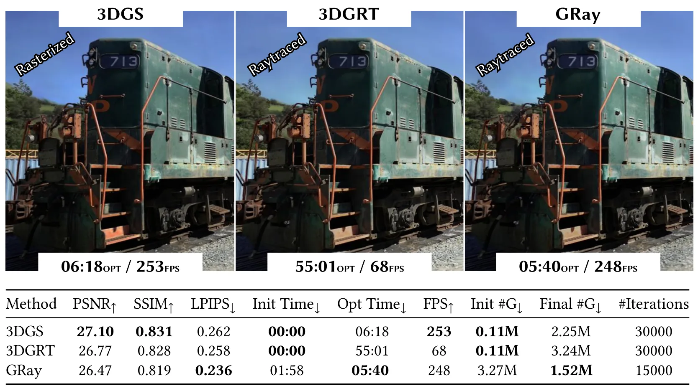
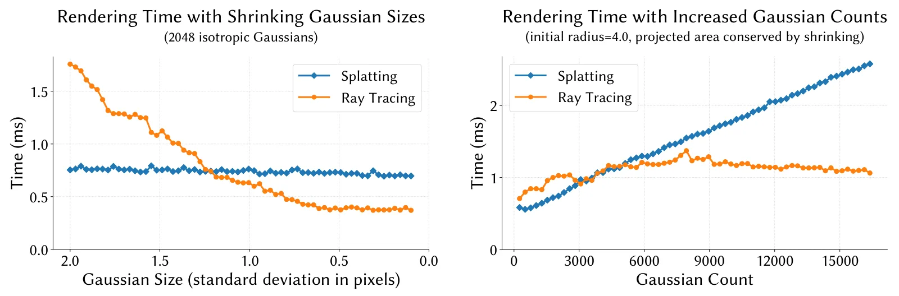
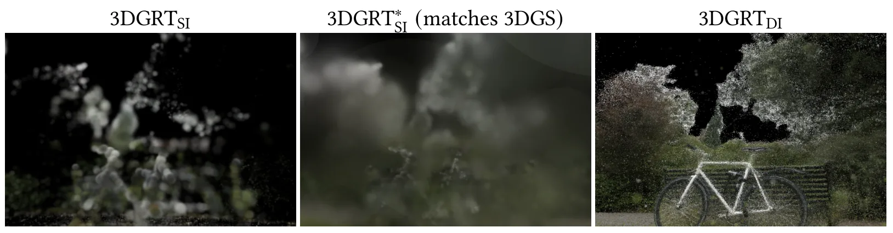
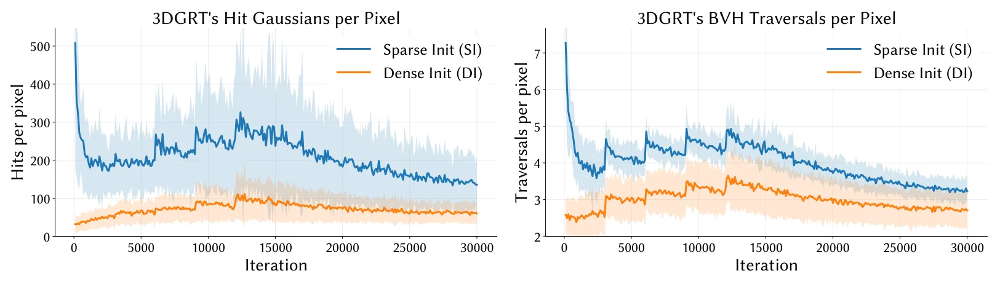
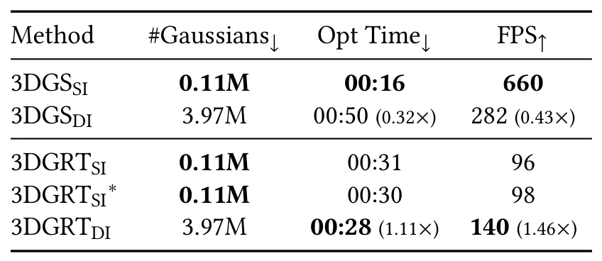

GRay：接近 splat 速度的 3D Gaussian 光线追踪GRay: Ray Tracing 3D Gaussians Near the Speed of Splats
直接相关于 3DGS 表示和渲染后端；对需要物理光线、反射或传感器模拟的三维地图有潜在价值。
一句话工作总结
为 3D Gaussian 场景提供更快 ray tracing 后端，可能支撑可编辑反射、传感器仿真和更物理一致的 3DGS 渲染。
摘要
3D Gaussian Splatting 的 rasterization 渲染速度很快，但 ray tracing 更自然支持反射、visibility 和复杂光照；过去 3D Gaussian Ray Tracing 优化速度接近慢一个数量级。GRay 利用 ray tracing 只评估与光线相交的 Gaussians，在大量小 Gaussian 的密集场景中可能比 rasterization 更有扩展性。作者发现 dense initialization 会拖慢 rasterization，却能加速 ray tracing，并据此设计 GRay。论文报告相比 3DGRT 渲染近 4× 更快、优化近 10× 更快，速度接近 3DGS，但质量略低。
3D Gaussian Splatting (3DGS) is a popular representation for radiance field reconstruction, distinguished by the rendering speed of its rasterization-based renderer. While 3D Gaussians can also be ray traced, this approach has so far been slower, with 3D Gaussian Ray Tracing (3DGRT) taking nearly one order of magnitude longer to optimize. To address this, we present GRay, a fast ray tracer for 3D Gaussians designed to close this performance gap and match 3DGS's speed. Our method leverages the algorithmic difference between both approaches: unlike rasterization, ray tracing evaluates only Gaussians that are actually intersected by a ray, leading to potentially logarithmic--rather than linear--scaling in the number of primitives. This property allows ray tracing to better exploit dense scenes composed of numerous tiny Gaussians, a configuration which has largely been overlooked. Notably, we show that dense initialization--which creates many small Gaussians--slows down rasterization, but instead speeds up ray tracing. Designed to leverage this effect, GRay renders nearly 4x faster and optimizes nearly 10x faster than 3DGRT while maintaining similar quality, and has competitive speed with 3DGS albeit at somewhat lower quality. Code is available at https://repo-sam.inria.fr/nerphys/gray.
中文解读摘录
- 为什么看：3DGS 默认 rasterization 很快，但 ray tracing 更自然支持反射、visibility 与复杂光照；GRay 试图把 3D Gaussian ray tracing 拉近 splatting 的速度。
- 方法要点：利用 ray tracing 只评估与光线相交的 Gaussians，理论上对大量小 Gaussian 的密集场景更接近 logarithmic scaling；dense initialization 对 ray tracing 反而可能加速。
- 结果信号：相对 3DGRT 渲染近 4× 更快、优化近 10× 更快；速度接近 3DGS，但质量略低。代码：https://repo-sam.inria.fr/nerphys/gray。
- 跟踪建议：关注其 acceleration structure、反向传播开销、与 dynamic Gaussian map 的兼容性，以及是否能支撑物理反射/传感器仿真。
- 链接：abs · PDF
图表/页面预览
{kind=link}

{kind=link}

{kind=link}

{kind=link}

{kind=link}
